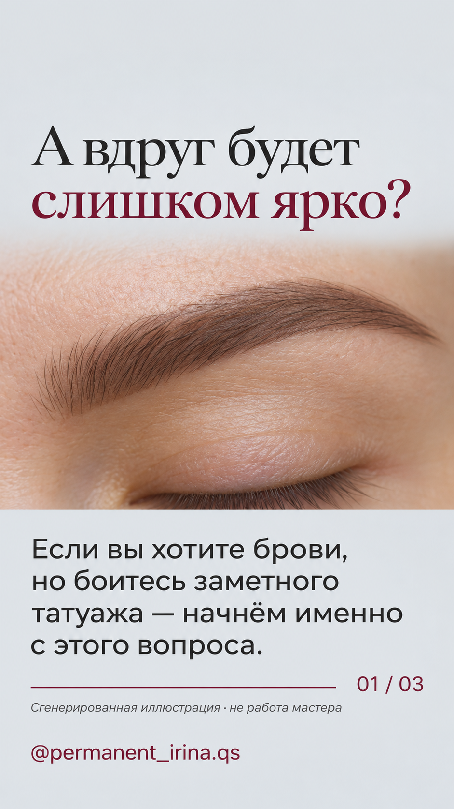
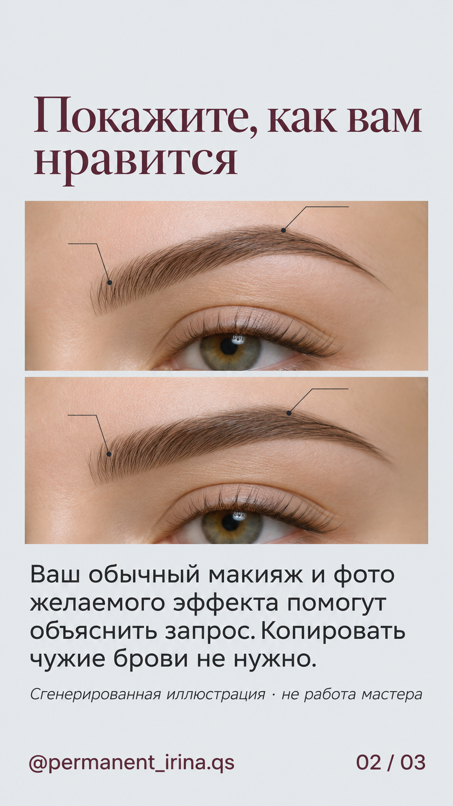
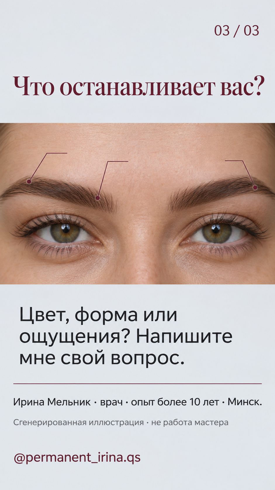

ПЕРВЫЙ КОМПЛЕКТ · НА ПРОВЕРКЕ
Понедельник. Начинаем с доверия.
Три сторис · 16 ноября · жемчужный, винный и графит.






Макеты для вашей проверки. В Instagram ничего не отправлено.
От первого вопроса до консультации. Минск · брови и губы.
Три сторис · 16 ноября · жемчужный, винный и графит.



Макеты для вашей проверки. В Instagram ничего не отправлено.
План полностью переработан после исследования крупных PMU-проектов. Откройте день: внутри готовые тексты кадров, подпись, цель и задание на оформление. Старые картинки не относятся к этой редакции. Картинки загружаются по дням; готовые комплекты отмечены в календаре. Время выхода — тестовая гипотеза, не запущенное расписание.
Все комплекты двух недель загружены. Откройте день в календаре, проверьте картинки и подписи, оставьте замечания. Автопубликация пока не подключена.
Согласование и расписание сохранены только в этом браузере. Автоматическая отправка в Instagram не подключена. Для переноса списка скачайте очередь.
Откройте день в календаре, проверьте комплект и нажмите «Одобрить и поставить в очередь».